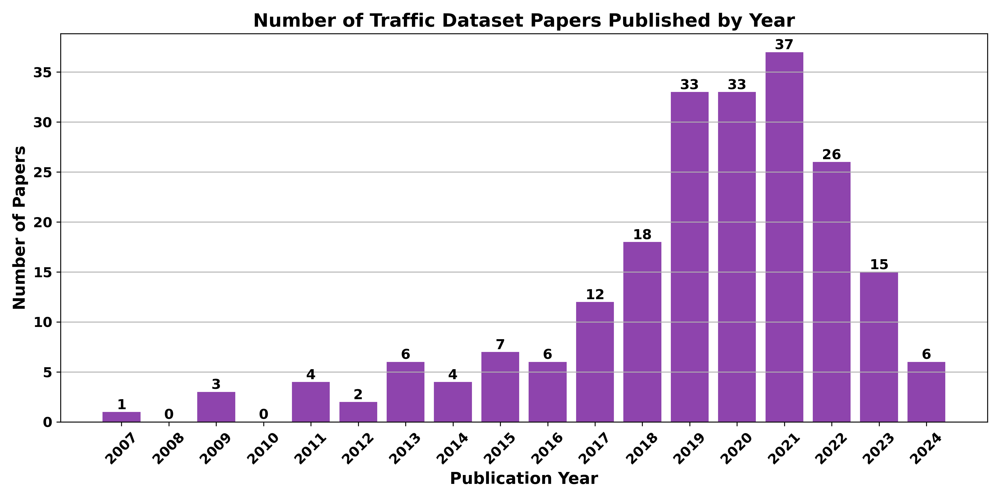

概要
本論文は、自動運転車（AV）開発を支えるトラフィックデータセットとシミュレータの包括的なレビューを提供する（著者：Supriya Sarker、Brent Maples、Iftekharul Islam、Muyang Fan、Christos Papadopoulos、Weizi Li）。自動運転パイプライン全体（知覚・自己位置推定・予測・計画・制御）にわたる統合的な分析を行い、アノテーション品質と、地理的多様性および環境条件がシステム性能に与える影響を評価する。
主な貢献として、機能領域別に整理された詳細なデータセット特性評価、そしてトラフィックシミュレータの専門的な研究応用の検討が挙げられる。著者らは、エッジケース対応のためのノベルアーキテクチャフレームワーク、マルチモーダルAI統合、高度なデータ生成技術など、新興トレンドを強調している。また、より堅牢な自動運転システム構築を目指す研究者のために、実世界のデータ収集とシミュレーション環境との連携を重視している。
1. 自動運転パイプラインの概要
自動運転システムは一般に、以下の5つのコアモジュールで構成される。
- 知覚（Perception）：カメラ、LiDAR、レーダーなどのセンサーデータから周囲環境を認識する
- 自己位置推定（Localization）：高精度地図とのマッチングやSLAM手法により自車位置を特定する
- 予測（Prediction）：他のエージェント（歩行者・車両など）の将来の軌跡・挙動を予測する
- 計画（Planning）：目標地点までの安全な走行経路を生成する
- 制御（Control）：計画された経路に従い車両をアクチュエートする
各モジュールに対して異なる種類のデータセットとシミュレータが必要とされる。本レビューはこれらすべてのモジュールをカバーする包括的調査である。
2. データセットのカテゴリ
2.1 知覚・自己位置推定データセット
知覚と自己位置推定は自動運転システムの基盤であり、多数の大規模データセットが存在する。主なデータセットを以下に示す。
- KITTI（2012年）：ドイツで収集された3D再構成・物体検出・追跡・視覚的オドメトリのためのデータセット。理想的な天候条件下での収集であり、多様な環境への汎化に課題がある
- BDD100K：10万件の都市走行動画を収集し、多様な環境条件を含む大規模データセット
- Waymo Open Dataset：LiDARとカメラデータが同期された高品質な1,150シーンを提供する
- nuScenes：360度カバレッジのマルチモーダルセンサーデータを持つ1,000シーンのデータセット
- Argoverse：豊富な3D注釈とHD地図を持つ自動運転データセット
- Lyft Level 5：詳細な意味論的アノテーションを持つ大規模データセット
- A2D2：Audiが公開した多様なシーンの自動運転データセット
- Oxford RobotCar：1年以上にわたり同一ルートを繰り返し走行したデータ。天候・季節・照明の変化を網羅
- CADC（Canadian Adverse Driving Conditions）：冬季の悪天候条件に特化したカナダのデータセット
2.2 予測データセット
軌跡予測と行動予測に特化したデータセットは、AVシステムの安全性向上に重要な役割を果たす。
- Argoverse Motion Forecasting：30万軌跡を含む運動予測データセット
- PIE（Pedestrian Intention Estimation）：歩行者の意図推定に特化したデータセット。実際の歩行者の目標地点、意図、行動を含む
- LOKI：軌跡と意図予測のための長期的観測データセット
- ETH/UCY：歩行者軌跡予測の標準ベンチマークデータセット
- Stanford Drone Dataset：航空写真から撮影された様々なエージェントの軌跡データ
- INTERACTION：多様なインタラクティブな運転シナリオを収録したデータセット。複雑な交差点やラウンドアバウトのシーンを含む
- NGSIM（Next Generation Simulation）：実際の高速道路での車線変更などの自然な車両軌跡データ
- Waymo Open Motion Dataset：大規模な実世界軌跡データを含む運動予測データセット
2.3 計画・制御データセット
計画と制御モジュールの開発・評価に特化したデータセットも多数存在する。
- highD：4.5万キロメートルに及ぶ高速道路走行データ
- nuPlan：4都市から収集された1,500時間のデータを含む計画ベンチマーク
- exiD / rounD：高速道路出口・ラウンドアバウトの複雑なシナリオデータ
- OpenDV：オープンドメインの実世界ドライビングビデオデータセット
- InD：市街地交差点での自然な車両軌跡を収録したデータセット
- Comma.ai：実際の人間ドライバーによる走行データを活用した模倣学習向けデータセット
3. アノテーション品質とプロセス
アノテーション品質はアルゴリズムの信頼性に大きく影響する。本論文では3つのアノテーション手法を検討する。
3.1 手動アノテーション
人間の専門家による注釈付けは、最も精度が高いが非常に労働集約的なアプローチである。KITTIやWaymoなどの初期データセットはこの手法に依存している。コストと時間がかかるため、大規模なデータセット構築には限界がある。一方で、複雑なシーンや曖昧な状況においては依然として人間の判断が不可欠である。
3.2 半自動アノテーション
検出・追跡アルゴリズムを活用してラベリングを補助する手法。既存モデルによる自動検出の結果を人間が検証・修正することで、コストと品質のバランスを取る。nuScenesやBDD100Kなど多くの現代的なデータセットがこのアプローチを採用している。自動化率が向上するにつれて、アノテーターは困難なケースや例外的な状況に集中できるようになる。
3.3 完全自動アノテーション
合成データや自己教師あり学習を活用した完全自動化手法。シミュレーション環境ではグラウンドトゥルースが自動生成されるため、理論上無限のアノテーションデータが得られる。ただし、シミュレーションから実世界へのドメインギャップが課題となる。近年の生成AIモデルの進歩により、よりリアリスティックな合成データの生成が可能になってきている。
4. トラフィックシミュレータ
シミュレータは実世界データセットの限界を補い、エッジケースや多様な条件のシナリオを生成するために不可欠なツールである。本論文では3種類のシミュレータを紹介する。
4.1 知覚重視シミュレータ
高品質なセンサーモデルとビジュアルリアリズムを重視するシミュレータ群。
- CARLA：オープンソースの自動運転シミュレータ。高品質なグラフィックと柔軟なシナリオ構成を提供。カメラ・LiDAR・レーダーなど多様なセンサーをサポート。Python APIによる拡張性が高く、研究コミュニティで広く採用されている
- MetaDrive：合成データ生成と強化学習実験に特化した軽量シミュレータ。手続き型生成による多様な道路環境を実現。計算効率が高く、大規模な強化学習実験に適している
- VISTA 2.0：実世界の走行データからフォトリアリスティックなシーンを再現するデータ駆動型シミュレータ。実際の走行映像を基にした高品質な視覚シミュレーションが特徴
- AirSim：Microsoftが開発した高品質フォトリアリスティックシミュレータ。Unreal Engineベースで、ドローンや車両の両方に対応。物理エンジンの精度が高い
- LGSVL Simulator：LiDARとカメラの両方をサポートする自動運転向けシミュレータ。ROSおよびCyberRTとの統合をサポート
4.2 シナリオベースシミュレータ
複雑なシナリオとエージェント間インタラクションの検証に特化したシミュレータ群。
- SMARTS（Scalable Multi-Agent Reinforcement Learning Training School）：マルチエージェント強化学習と自動運転に特化したシナリオ管理シミュレータ。多様なエージェントモデルとシナリオを提供
- Waymax：GoogleがJAXベースで開発した高速自動運転シミュレータ。実世界のWaymoデータに基づくリアリスティックなシナリオを提供。GPU加速による高速シミュレーションが特徴
- Simcenter Prescan：複雑な運転シナリオと自動化された安全検証に特化した産業用シミュレータ。ADASおよびADシステムの機能安全評価に広く使用される
- CommonRoad：検証可能な運動計画シナリオのためのフレームワーク。標準化されたシナリオ形式と評価指標を提供
- Scenic：確率的プログラミング言語によるシナリオ記述と生成ツール。自然言語に近い構文でシナリオを記述可能
4.3 トラフィック・モビリティシミュレータ
交通流全体の挙動とマクロレベルのモビリティをシミュレートするツール群。
- SUMO（Simulation of Urban MObility）：オープンソースの交通流シミュレーションツール。様々な交通ネットワークと車両モデルをサポート。OpenStreetMapとの統合により現実世界のネットワークを容易に取り込める
- PTV Vissim：都市交通と高速道路の詳細な交通流シミュレーションに使用される商用ツール。歩行者・自転車を含む複合的な交通シミュレーションが可能
- SimMobility：都市規模のモビリティシステムをシミュレートするフレームワーク。交通需要モデルと供給モデルを統合
- FLOW：SUMOとOpenAI Gym環境を統合した深層強化学習向けトラフィックシミュレータ。自動運転車が混在する交通流の最適化研究に活用
- MATSim：エージェントベースの交通需要シミュレーションフレームワーク。都市規模の大規模シミュレーションに対応
5. データセットとシミュレータの比較分析
5.1 センサーモダリティ
自動運転データセットに含まれるセンサーの種類は多岐にわたる。
- カメラ：視覚情報の収集に最も普及しているセンサー。単眼・ステレオ・全周囲カメラなど種類が豊富。RGB、深度、イベントカメラなどバリエーションも広い
- LiDAR：高精度な3D点群データを提供するセンサー。Waymo、nuScenes、KITTIなど主要データセットで使用。機械式・固体式など種類がある
- レーダー：悪天候条件でも安定した物体検出が可能なセンサー。nuScenesなどのデータセットに含まれる。ドップラー効果による速度計測が可能
- GPS/GNSS・IMU：自己位置推定に不可欠なセンサー。ほぼすべての自動運転データセットに含まれる
5.2 地理的多様性
多くの初期データセット（KITTIなど）は特定の国・地域のみで収集されており、地理的多様性に欠ける。近年ではBDD100K（米国各地）、nuScenes（ボストン・シンガポール）、Waymo（米国複数都市）など、より多様な地域をカバーするデータセットが登場している。しかし、アジア・アフリカ・南米などのデータはいまだ不足しており、交通文化の違いによる走行挙動への影響が十分に反映されていない点が課題である。
5.3 環境条件の多様性
実世界の自動運転システムは様々な天候・照明条件に対応する必要がある。初期データセットの多くは晴天・昼間条件に偏っており、雨・霧・夜間などの条件は不足している。BDD100KやAdverse Conditionsデータセット（CADC、DRIVINGSTEREOなど）など、悪天候条件を意図的に含むデータセットが徐々に整備されてきているが、エッジケースのカバレッジは依然として課題となっている。
6. 新興トレンドと将来方向
6.1 エンドツーエンド学習
モジュール型パイプラインに代わり、センサー入力から制御出力まで統合されたエンドツーエンドモデルの開発が進んでいる。UniAD、Think Twice、DriveVLMなどの手法が注目を集めており、これらを評価するための新たなデータセット要件が生じている。エンドツーエンドシステムは個々のモジュールのエラーが蓄積する問題を回避できるが、解釈可能性と安全性の検証が課題となる。
6.2 ビジョン言語モデルの統合
大規模言語モデル（LLM）とビジョンモデルを組み合わせたマルチモーダルAIの統合が進んでいる。これにより、自然言語による指示に基づく走行、視覚的なシーン理解の向上、解釈可能性の改善が期待される。GPT-4V、Gemini、LLaVAなどのモデルが自動運転タスクへの応用が探索されている。
6.3 合成データ生成
Soraのようなテキストからビデオを生成するモデルが、自動運転シナリオの合成データ生成に応用され始めている。これにより、実世界では収集困難なエッジケースのデータを大量生成することが可能になると期待される。NeRFや3D Gaussian Splattingなどの技術を活用したシーン再構成・拡張も重要な研究方向である。
6.4 ドメイン適応
異なる環境・センサー間でのモデル性能のギャップ（ドメインギャップ）を克服するための研究が進んでいる。転移学習やドメイン適応技術を活用し、限られたデータで新しい環境への汎化を実現する手法が注目されている。特にシミュレーションから実世界への適応（sim-to-real）は重要な研究課題である。
6.5 稀なイベントのカバレッジ
自動運転システムの安全性向上のために、事故シナリオや極端な気象条件など稀なイベントを含むデータセットの整備が重要視されている。シミュレータを活用した合成データ生成や、実世界の事故データの収集・共有（例：FHWAのドラシュデータなど）が推進されている。重要性確率サンプリングやGAN/拡散モデルを活用したデータ拡張も研究が進んでいる。
7. 実世界データとシミュレーション環境の統合
著者らは、実世界データ収集とシミュレーション環境を組み合わせることの重要性を強調する。シミュレータは、現実のデータセットでカバーしきれないシナリオを補完することで、より堅牢なAVシステムの開発を可能にする。主なアプローチとして以下が挙げられる。
- Sim-to-Real転移：シミュレーション環境で学習したモデルを実世界に適用する技術。ドメインランダム化により汎化性能を向上
- リアリスティックシミュレーション：実世界データの統計的特性をシミュレーションに取り込み、ドメインギャップを縮小する
- データ拡張：実世界データにシミュレーション環境での合成データを組み合わせた学習データの拡充
- クローズドループ評価：シミュレーション環境での閉ループシステム評価による安全性検証。実際の走行前のシステム検証に不可欠
- デジタルツイン：実世界の道路環境を高精度にデジタル化したシミュレーション環境での評価
8. 結論
本レビューは、自動運転向けトラフィックデータセットとシミュレータの包括的な分析を提供する。主要な知見として以下が挙げられる。
- 現在のデータセットは地理的多様性・環境条件の多様性において依然として限界がある
- シミュレータは実世界データの限界を補う重要なツールであるが、ドメインギャップの問題が残る
- アノテーション品質の向上と自動化が、スケーラブルなデータセット構築の鍵となる
- エンドツーエンド学習や大規模言語モデルの統合など新技術に対応したデータセット・評価指標の整備が急務である
- 実世界とシミュレーションを組み合わせたハイブリッドアプローチが、より堅牢なAVシステムの開発を可能にする
研究者がより堅牢な自動運転システムを構築するために、実世界データ収集とシミュレーション環境の両方を戦略的に活用することが重要である。本論文は、適切なデータセットとシミュレータの選択・活用に関する包括的なガイドラインを提供する。なお、本論文は2025年8月に実質的な改訂の必要性から取り下げられているが、データセット全体像を俯瞰するサーベイとして参考価値は保たれている。